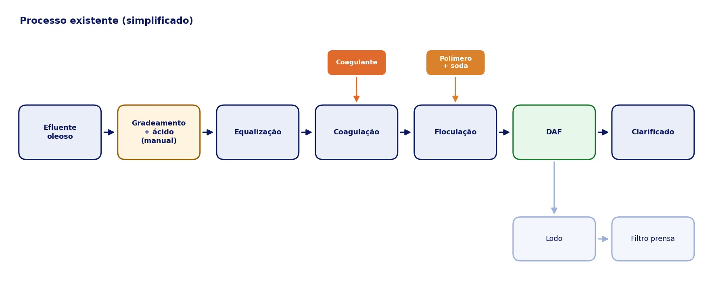
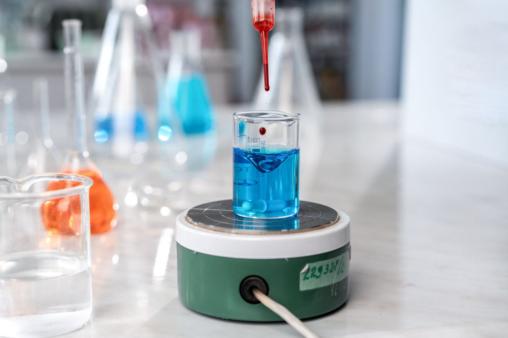
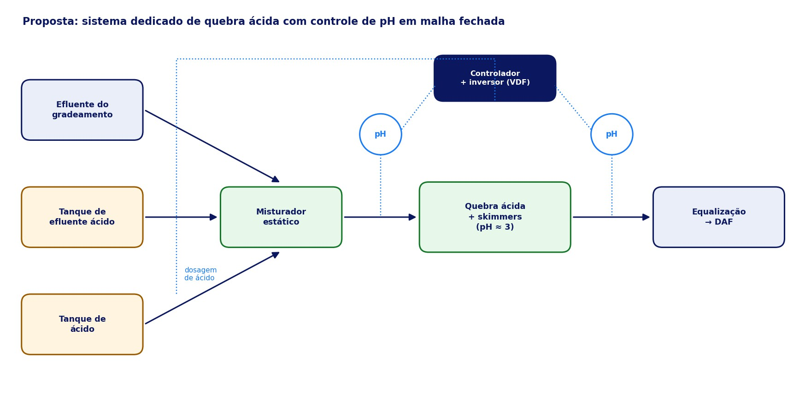
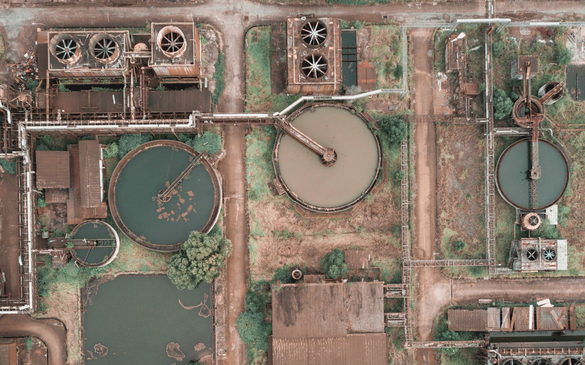
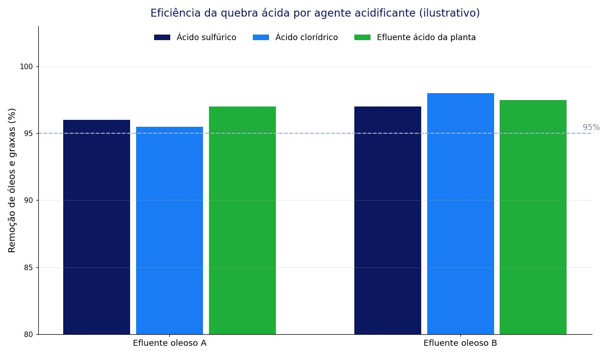
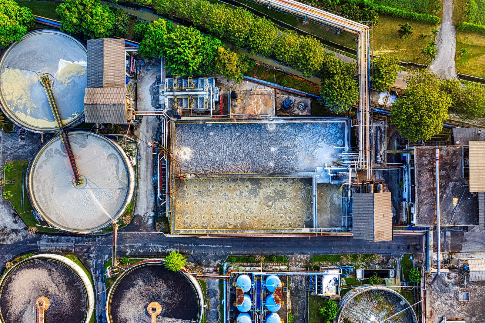
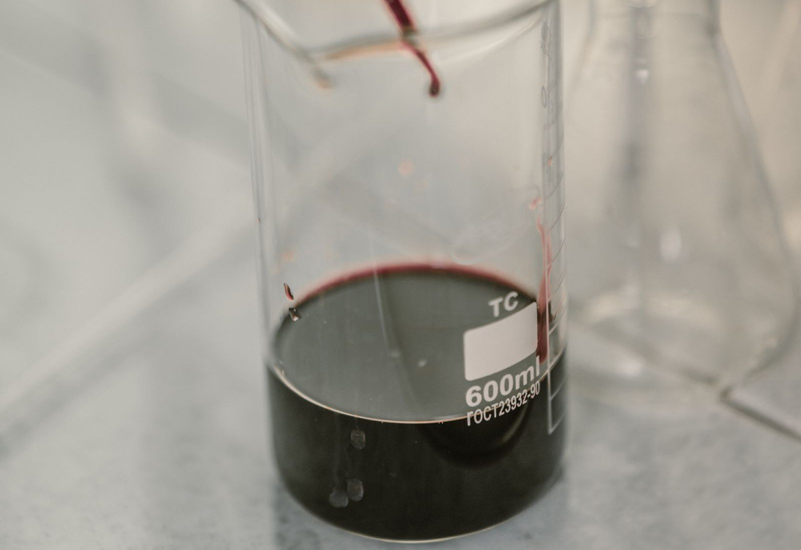

Problema / desafio do cliente
Em uma central de tratamento de efluentes no estado de São Paulo, uma das linhas recebe efluentes industriais oleosos, como lubrificantes e emulsões óleo-água. A quebra das emulsões era feita de forma manual: o ácido era dosado diretamente na caixa de gradeamento, com um operador observando se havia separação.
Essa prática afetava a integridade dos equipamentos, dificultava o controle de qualidade do processo, consumia muitas horas de trabalho e deixava óleos, graxas e compostos fenólicos passarem para as etapas seguintes. O cliente precisava de alternativas para melhorar a separação óleo-água e a eficiência do sistema de flotação.
Contexto e características do processo
A linha opera com a seguinte sequência: gradeamento com dosagem manual de ácido, tanque de equalização, coagulação, floculação com polímero e soda e flotação por ar dissolvido (DAF). O clarificado segue para a etapa seguinte da planta e o lodo flotado é desaguado em filtro prensa.

- Vazão diária muito variável, com grande dispersão de um dia para o outro, enquanto o volume mensal se mantém relativamente estável.
- Consumo específico de produtos químicos (coagulante, soda, ácido e polímero) com forte oscilação ao longo do ano, sinal de um controle de dosagem pouco estável.
Diagnóstico e dados analisados
A partir da análise da série histórica de vazão e de consumo de reagentes e de reuniões técnicas com a operação, foram definidos quatro pontos de melhoria:
- Etapa dedicada de quebra ácida, eliminando a descarga manual de efluentes ácidos e a dosagem direta no gradeamento.
- Melhoria química do DAF, avaliando rotas físico-químicas diferentes e o sistema de injeção de ar.
- Melhoria estrutural do DAF, para aumentar a eficiência da separação de sólidos e frações oleosas.
- Avaliação de um processo oxidativo avançado (POA) no clarificado, para remover compostos recalcitrantes como fenóis.
Metodologia utilizada
- Análise estatística da vazão (distribuição diária, boxplot e tendência mensal) e do consumo específico de reagentes por m³ tratado.
- Revisão técnica da quebra ácida: redução do pH para a faixa de 2 a 4, que neutraliza agentes emulsificantes, reduz o potencial zeta das gotículas e rompe a camada interfacial, favorecendo a coalescência do óleo.
- Ensaios de bancada de quebra ácida com dois efluentes oleosos reais e três agentes acidificantes (ácido sulfúrico, ácido clorídrico e um efluente ácido disponível na própria planta), ajustados ao mesmo pH, seguidos de decantação e medição de óleos e graxas, lodo oleoso gerado e dosagem necessária.
- Avaliação das operações unitárias de separação: separador água-óleo tipo API/skimmer, tanques com skimmers internos e centrífugas.
- Planejamento de jar tests para o DAF: coagulantes, polímeros, pH ótimo, dosagens e remoção de turbidez, óleos e graxas e DQO em diferentes saturações de ar.

Solução de engenharia desenvolvida
Foram desenvolvidas duas alternativas complementares:
Alternativa A – sistema dedicado de quebra ácida. O efluente do gradeamento é misturado, a vazão constante, ao efluente ácido de um tanque de acumulação (aproveitando um resíduo da própria planta) e a um ácido de complemento. As correntes passam por um misturador estático e seguem para uma caixa de quebra ácida com skimmers, operando em pH próximo de 3. O controle de pH usa malha fechada com dupla medição (entrada e saída da caixa) e inversor de frequência na bomba dosadora, evitando a sobredosagem de ácido e permitindo receber mais efluentes básicos.

Alternativa B – nova rota química no DAF. Elimina a quebra ácida no gradeamento e concentra a separação no DAF: coagulante em combinação com polímeros de alto peso molecular, ácido apenas para ajustar o pH ao ponto ótimo de coagulação, floculação tubular para incorporar todo o sólido ao DAF e soda somente para a correção final de pH. Assim, aproveita-se toda a capacidade hidráulica e a área superficial do flotador.
Tecnologias e processos envolvidos
A quebra ácida (acid cracking) desestabiliza emulsões do tipo óleo em água pela redução controlada do pH, permitindo que as gotículas de óleo coalesçam e sejam separadas por flotação, decantação ou escumação. É amplamente usada no tratamento de efluentes oleosos e como pré-tratamento de separadores API, CPI e DAF.
A flotação por ar dissolvido (DAF) separa sólidos e óleos por meio de microbolhas de ar, após coagulação e floculação. A eficiência depende do pH, do tipo de coagulante e polímero e da saturação de ar.

Modelagem, simulação e ferramentas computacionais
- Análise de dados em Python: séries históricas de vazão, boxplots, tendência mensal e consumo específico de reagentes.
- Balanço de reagentes por m³ tratado, para comparar a rota atual com as alternativas propostas.
- Comparação estatística dos ensaios por agente acidificante: remoção de óleos e graxas, lodo oleoso gerado e dosagem.
- Concepção da malha de controle de pH com dupla medição e atuação por inversor de frequência.

Resultados obtidos
- Os ensaios de quebra ácida alcançaram mais de 95% de remoção de óleos e graxas em todas as condições avaliadas, confirmando a robustez do processo para efluentes com alta carga de hidrocarbonetos.
- O ácido clorídrico mostrou alta eficiência com menor dosagem, uma vantagem operacional e econômica.
- O efluente ácido da própria planta exige volumes maiores, mas aproveita um resíduo existente, favorece a diluição e gera um lodo oleoso mais fácil de manejar.
- A automação proposta elimina a dosagem manual, reduz o risco de sobredosagem e melhora a integridade dos equipamentos.
- Próximas etapas: jar tests do DAF e avaliação técnico-econômica das duas alternativas.
CAPEX/OPEX e análise técnico-econômica
| Critério | Alternativa A – quebra ácida dedicada | Alternativa B – nova rota no DAF |
|---|---|---|
| Investimento | Maior (tanques, misturador, instrumentação) | Menor (ajustes de dosagem e floculação) |
| Consumo de ácido | Otimizado pela malha de pH | Reduzido (apenas ajuste de pH) |
| Geração de lodo | Lodo oleoso separado na etapa ácida | Todo o sólido incorporado ao DAF |
| Mão de obra | Operação automatizada | Operação simplificada |
A comparação de CAPEX e OPEX considera o consumo de ácido, a demanda de neutralização posterior, a geração de lodos, os requisitos estruturais e a recuperação da capacidade hidráulica em relação ao processo atual. A análise econômica detalhada faz parte da próxima etapa do plano de ação.
Escopo e responsabilidades da GETA
A GETA atuou na supervisão técnica da linha, sendo responsável por:
- diagnóstico da linha de base e análise dos dados de vazão e consumo de reagentes;
- identificação dos desafios operacionais junto à equipe do cliente;
- planejamento, execução e análise dos ensaios de bancada de quebra ácida;
- concepção das alternativas de melhoria, do esquema de processo e da malha de controle de pH;
- elaboração do plano de ação e do protocolo dos próximos ensaios.
Principais entregáveis
- Plano de ação para melhoria da linha de efluentes oleosos.
- Análise da linha de base: vazão diária e mensal e consumo específico de reagentes.
- Relatório dos ensaios de quebra ácida com diferentes agentes acidificantes.
- Fluxogramas do processo atual e das alternativas propostas.
- Conceito do sistema de quebra ácida com controle de pH em malha fechada.
- Protocolo de jar tests para otimização química do DAF e critérios de avaliação de CAPEX e OPEX.
Galeria


Fotos ilustrativas de banco de imagens (Pexels) e esquemas simplificados, preservando a confidencialidade do cliente.